Dinosaur Phylogenetics
Phylogenetics
Phylogenetics is the study of evolutionary relationships among organisms. It arranges organisms into groups called clades based on common ancestry, as indicated by shared derived characteristics (synapomorphies). This is the prevailing method of biological classification now, despite the prominence of the Linnean classification system.
An Aside on the Linnaen Classification System
The Linnaen classification system is commonly taught in grade schools - it is the system that organizes all of life into ranks of Domain, Kingdom, Phylum, Class, Order, Family, Genus, and Species. While it forms a basis for classification of species and genera, it is an outdated system with two key problems. First, it is based on physical appearance, rather than overall similarity. Physical traits can be useful in recognizing groups, but not in defining them (consider bats and birds - they both have wings, but their wings evolved independently of each other). Secondly, because the ranks in the Linnaen system are fixed, it assumes that nature is static and that animal characteristics do not change through time. If you define an animal by the possession of a feature, then that feature is not allowed to change through time; if it did, then that animal would become part of another classification.
We did, however, retain the concept and nomenclature of the genus and the species. A genus is a group broader than species that groups closely-related species who share a common ancestor. A species is the most specific unit of classifications for animals that can interbreed. The formal name of each species consists of two words, italicized, where the first is the genus and the second is the species (e.g., Spinosaurus mirabilis).
Phylogenetics centers around evolutionary relationships - as in, shared ancestors - rather than plain classification (as in the Linnaen system). These evolutionary relationships are established through the identification of synapomorphies, which are shared, derived character traits. More concretely, a synapomorphy is a trait that evolved in the most recent common ancestor of a group and that is henceforth passed on to its descendants. It is these synapomorphies that are used to define monophyletic groups, or clades (a section of the phylogeny that includes an ancestor and all of its descendants) within the tree of all life. For example, the clade Vertebrata can be distinguished from its ancestors in the clade Chordata by the evolution of a vertebral column and a complete brain case. Note, however, that vertebrates are still chordates - vertebrates evolved and diverged from a common ancestor within Chordata. This applies to phylogenetics as a whole - the “directory” of each species in the tree of life is comprised of all its ancestors.
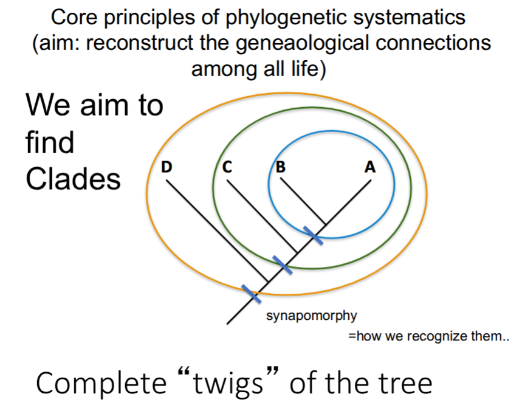
More Terminology
In phylogenetics, the terms apomorphy and plesiomorphy are commonly used in describing character states.
Plesiomorphy: an ancestral trait; a trait inherited from a distant common ancestor that is shared by members of a clade, but not unique to them (e.g., a backbone in reptiles)
Apomorphy: a derived trait; a character that has evolved from a plesiomorphic character. Consists of the following two types:
Synapomorphy: (defined above) a shared, derived character that defines a clade
Autapomorphy: a unique, derived character found only in one taxon (e.g., speech in humans)
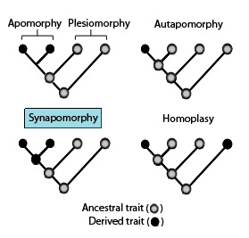
Dinosaurs in the Tree of Life
Phylogenetically, dinosaurs are classified as so: Chordata > Vertebrata > Gnathostomata > Osteichthyes > Sarcoptrygii > Tetrapoda > Amniota > Sauria > (Archosauriformes) > Archosauria > Ornithodira > (Dinosauriformes) > Dinosauria. Recall that each clade is defined by synapomorphies that distinguish it from its parent node (though its placement within the parent group can be established through plesiomorphies).
The following sections will break down each clade leading to Dinosauria, outlining the key synapomorphies that define them, as well as their following lineages.
Chordata
Key synapomorphies: a notochord (an elastic, rod-like structure).
Lineages: Vertebrata, Tunicata (tunicates), Cephalochordata (lancelets)
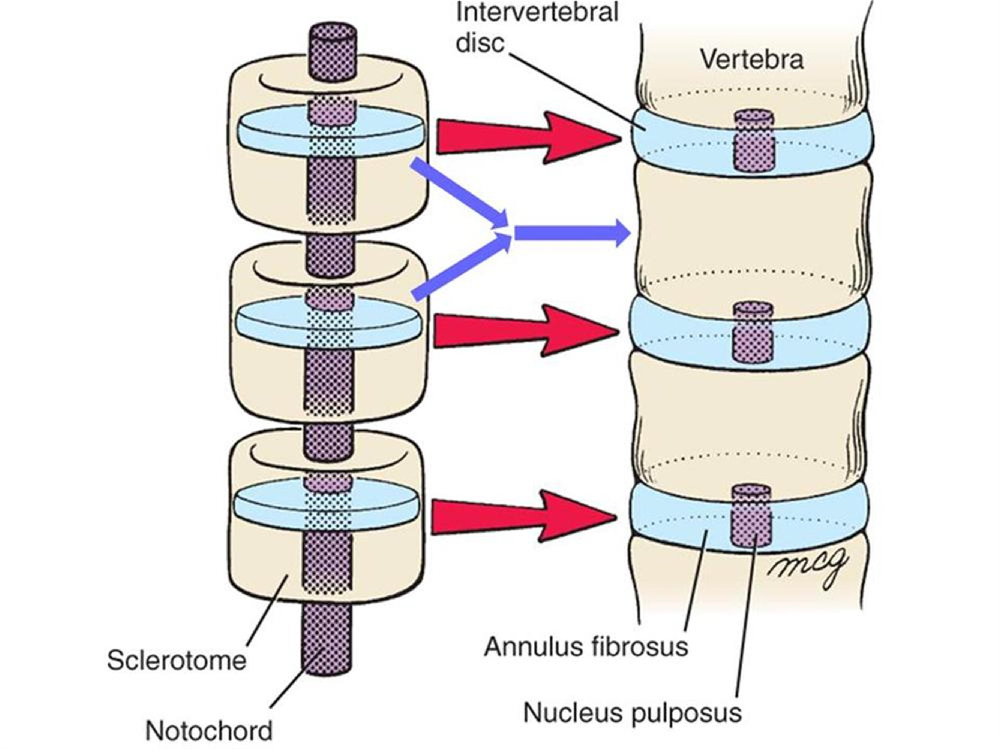
Vertebrata
Key synapomorphies: a vertebral column, either bony or cartilaginous, and a complete brain case.
- In vertebrates, the notochord is an embryonic structure that disintegrates as the vertebrae develop.
Lineages: Gnathostomata
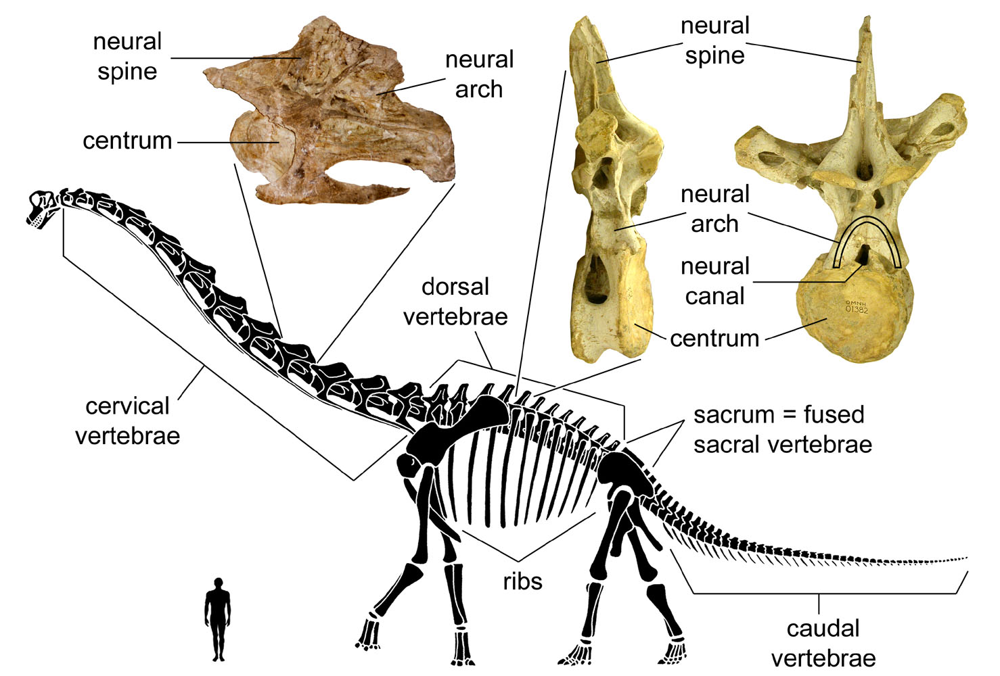
Gnathostomata
Gnathostomes are jawed vertebrates. Placoderms, which are large, prehistoric jawed fish, are gnathostomes.
Key synapomorphies: jaws
Lineages: Osteichthyes (bony fish), Chondrichthyes (cartilaginous fish)
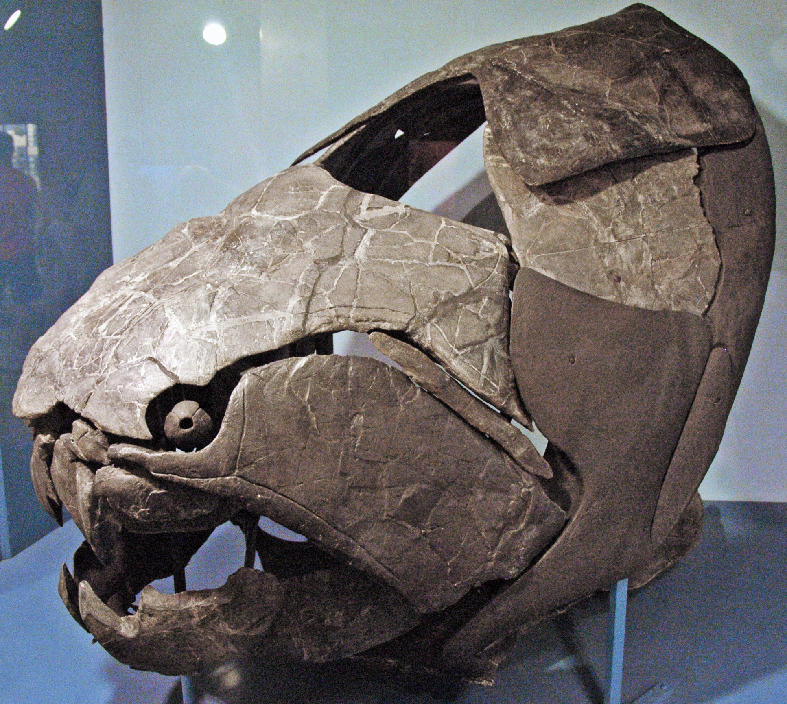
Osteichthyes (bony fish)
Osteichthyans, or more commonly known as the bony fish, have an endoskeleton comprised mostly of bone tissue, as opposed to cartilage (as in Chondrichthyes, of which sharks are an example).
Key synapomorphies: a bony vertebral column
Lineages: Sarcoptrygii (lobe-finned fish), Actinoptrygii (ray-finned fish)
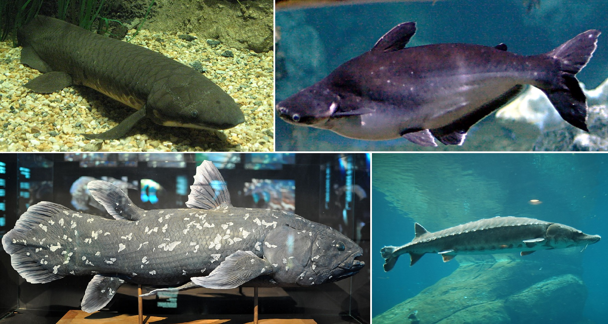
Sarcoptrygii (lobe-finned fish)
Differs from Actinoptrygii, which includes most fish, in that actinoptrygians only have bony spines supporting their fins.
Key synapomorphies: lobe fins that are supported by differentiated limb bones
Lineages: Tetrapoda, Coelocanth, Lungfish

Tetrapoda
Tetrapoda includes all limbed vertebrates, i.e., all extinct and extant amphibians and amniotes, with the latter in turn evolving into two major clades - the saurians (reptiles, including dinosaurs and therefore birds) and synapsids (including mammals).
Key synapomorphies: limbs with digits
Lineages: Amniota
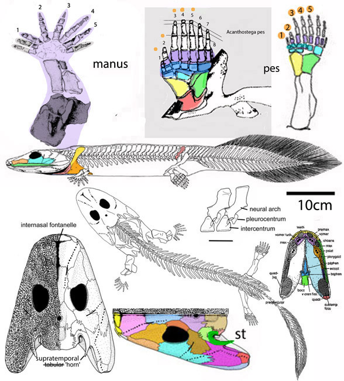
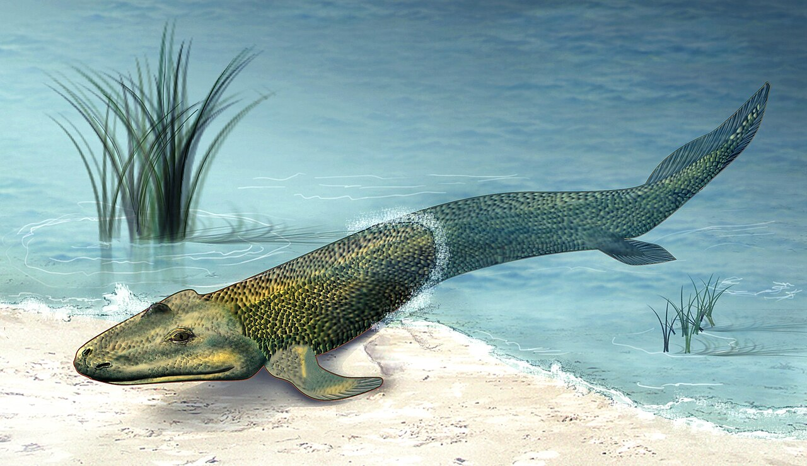
Amniota
Key synapomorphies: amniotic egg with 3 membranes (the amnion, allantois, and chorion)
Lineages: Sauria, Synapsida
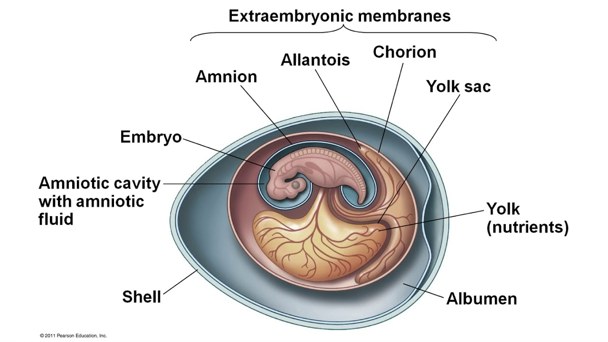
Sauria
Sauria is essentially the crown group of reptiles.
Key synapomorphies: 2 temporal fenestrae - both the infratemporal and the supratemporal fenestra (as opposed to synapsids, who only have the infratemporal fenestra)
Lineages: Archosauriformes, Lepidosauria (lizards and snakes), Testudines (turtles)
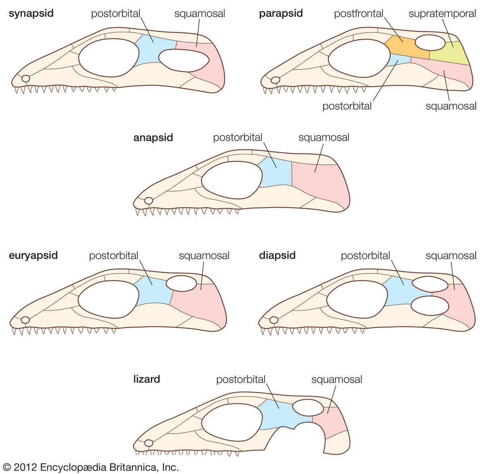
Archosauriformes
Archosauriformes is the clade of reptiles encompassing archosaurs and their close relatives.
Key synapomorphies: antorbital fenestra, madibular fenestra, socketed teeth, symmetrical footh with the third toe longest
Lineages: Archosauria
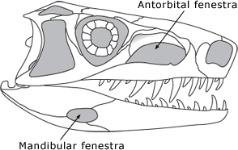
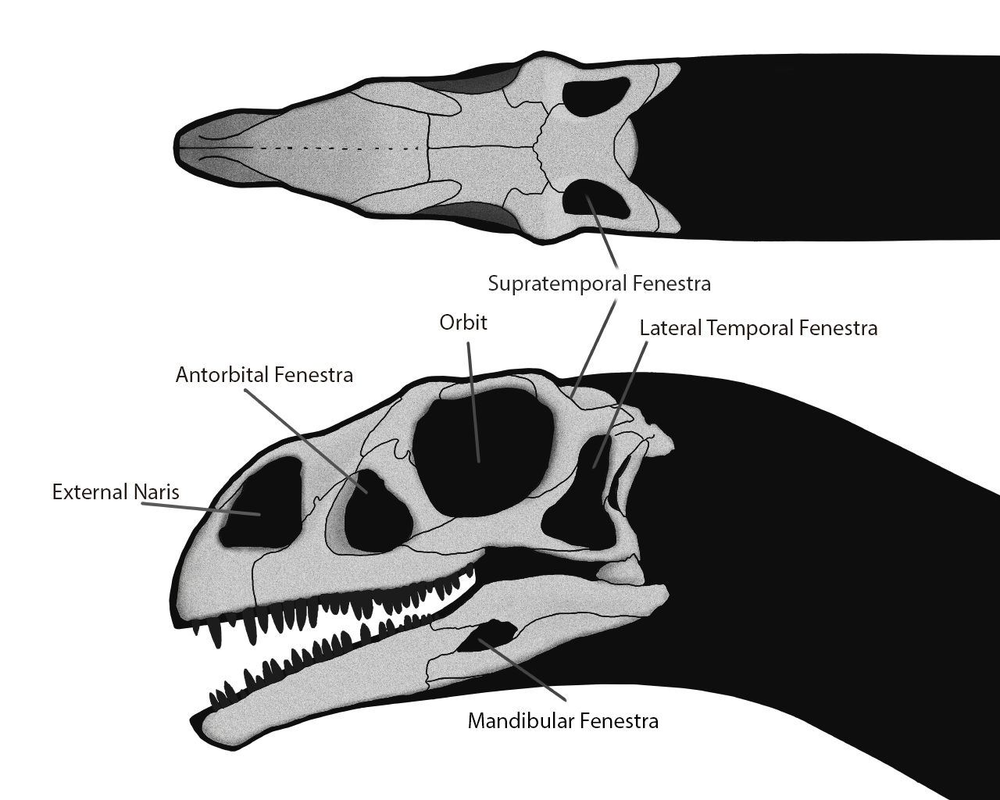
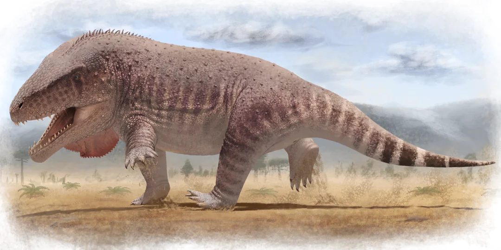
Archosauria
Archosauria includes the most recent common ancestor of bids and crocodilians, and all their descendants. The Archosaur Revolution in the Triassic saw reptiles adopt new ways of locomotion and breathing, setting the scene for the rise of dinosaurs. Specifically, archosaurs had upright stances (as opposed to a sprawling stance) that allowed for gait independent of breathing, and a 4-chambered heart that allowed for higher sustained metabolic rates.
Key synapomorphies: more upright stance, acetabular crest, 4-chambered heart, parental care. * Also, all the Archosauriformes synapomorphies are also unique to Archosauria relative to all other reptiles, but arose earlier in Archosauriformes.
Lineages: Ornithodira, Pseudosuchia (crocodile-line archosaurs - archosaurs more closely-related to crocodiles than to birds)

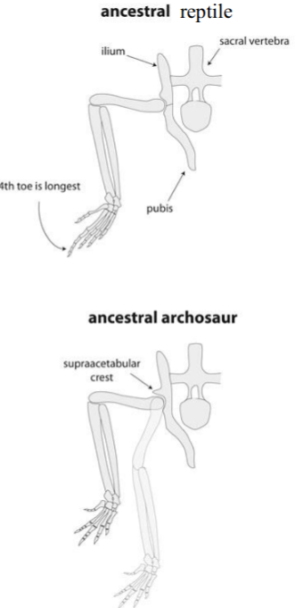
Ornithodira
Ornithodira, also called Avemetatarsalia, is the clade containing all archosaurs more closely related to birds than to crocodiles.
Key synapomorphies: are subtle and continue to change
- However, there is a key difference between ornithodiran and pseudosuchian ankles. Pseudosuchians have a crurotarsan ankle that allows for an upright, semi-erect “high walk,” whereas ornithodirans have a mesotarsal ankle that limits motion to a single plane, which allows for a more upright, parasagittal (limbs directly under the body) gait that is optimized for speed and stability.
Lineages: Dinosauromorpha, Pterosauromorpha (> Pterosauria)
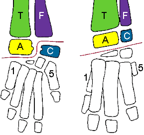
Dinosauromorpha
Dinosauromorpha first appeared in the Middle Triassic, and contains dinosaurs and all its close relatives.
Key synapomorphies: first three fingers of hand are the longest, S-shaped neck
Lineages: Dinosauria
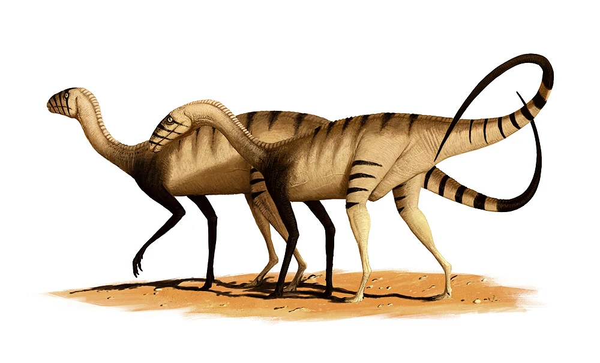
Dinosauria
Dinosaurs! Dinosauria is defined as the most recent common ancestor of ornithischians and birds, and all their descendants. They first appeared in the Middle or early Late Triassic. Within Dinosauria, there are two main branches of dinosaurs - namely the ornithischians and the saurischians.
Key synapomorphies: opposable thumb, perforate acetabulum, sharply inturned femoral head, crest on humerus, faster growth rates
Lineages: Ornithischia, Saurischia
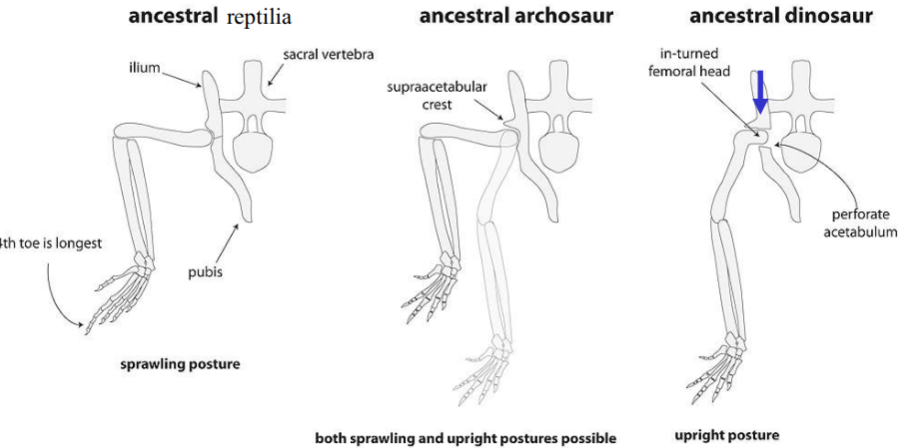
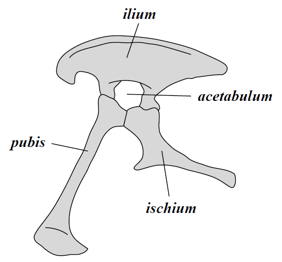
Here is where we are in the phylogeny.